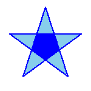

Dr. Odilon Joël HOUNDEGNONTO
Physical Oceanographer and Environment
Odilon Joël Houndegnonto is a Postdoc researcher (at CNRS) in the Ocean and Climate group at LOPS (Laboratory for Ocean Physics and Satellite remote sensing, Brest-France). He currently studies the regional variations of Steric Sea Level (SSL) and Ocean Heat Content (OHC) in the Irminger basin (north Atlantic ocean), including potential linkages of ocean dynamics and air-sea interaction in the context of global warming. He principally uses satellite observations (GRACE, Altimetry, SMOS, SMAP) and In Situ measurements (CTD, Argo, ADCP) combined with numerical simulation output data (NEMO). His current work includes also the validation part of 4DAtlantic-OHC project. He did his PhD at Université de Brestagne Occidentale, on the Analysis of thermohaline variations from intra-seasonal to seasonal scales of freshwater plumes in the Gulf of Guinea. He joined the CNRS (Centre National de la Recherche Scientifique) researcher team at LOPS in mid-March 2022.
Education
- • 2021. Ph.D., Physical Oceanography and Environment, University of Brest (UBO, France)
- • 2017. M.Sc. Physical Oceanography and Applications / Ocean, Atmospheric and Climate Sciences (with Honors), Paul Sabatier University of Toulouse (UPS, France) and International Chair in Mathematical Physics and Applications (ICMPA UNESCO- Chair) of University of Abomey Calavi (UAC, Benin)
- • 2015. Maîtrise ès-sciences Physiques (equivalent of M.Sc. First year), Faculty of Sciences and Technologies (FAST), University of Abomey Calavi (UAC, Benin).
- • 2014. Licence ès-sciences Physiques (equivalent of B.Sc.), Faculty of Sciences and Technologies (FAST), University of Abomey Calavi (UAC, Benin).
- • 2013. DUES (Diplôme Universitaire d’Etude Scientifique): Physics and Chemistry, Faculty of Sciences and Technologies (FAST), University of Abomey-Calavi (UAC, Benin).
Professional Experience ( > CV)
- • Postdoc scientist at CNRS/LOPS, Plouzané, France (March 2022 -present)
- • Associate researcher at the CIPMA-UNESCO Chair, Benin (December 2021 - present)
- • PhD research task at UBO-IRD/LOPS, Brest, France (October 2018 - December 2021)
- • Data scientist - Thermosalinograph data processing at GEOMAR, Kiel, Germany (July, 2018)
- • Hydrographer on ocean research vessel on Atlantic ocean - Position: CTD, UCTD, ADCP measurements, Microstructure, Argo and Glider float deployment - R/V Meteor, cruise M148, (Belem, Brazil – Walvis Bay, Namibia, May-June, 2018)
- • Scientific research cruise on Lake Nokoué - Position: ADCP, CTD, Turbidity, Ph and, Bathymetry with echo-sounder measurements -, IRD & IRHOB, Benin (Sep., Nov. and Oct. 2017)
Reseach and Publications
[3] Houndegnonto, O. J. Analyse des variations thermohalines des échelles intra-saisonnière à saisonnière des panaches d’eau douce du Golfe de Guinée. Océanographie. Université de Bretagne Occidentale (UBO), Brest, 2021. Français. ⟨tel-03615021⟩ [Thesis manuscript] - [Presentation].
[2] Houndegnonto, O. J., Kolodziejczyk, N., Maes, C., Bourlès, B., Da-Allada, C. Y., & Reul, N. (2021), Seasonal variability of freshwater plumes in the eastern Gulf of Guinea as inferred from satellite measurements. Journal of Geophysical Research: Oceans, 126, e2020JC017041. https://doi.org/10.1029/2020JC017041.
[1] Houndegnonto, O. J. (2017), Characterization of Niger and Congo rivers plumes in the Gulf of Guinea, Supervisors: Nicolas Kolodziejczyk (Université de Bretagne Occidentale – UBO/Brest, France), Casimir Da-Allada (Université Nationale des Sciences Technologies, Ingénierie et Mathématique – UNSTIM/Abomey, Benin) and, Bernard Bourlès (Institut de Recherche pour le Développement – IRD/Brest, France) [M. Sc. thesis rapport in french]
Review Activities
- • 2022-present: Reviewer for the Journal of Geophysical Research: Oceans
Community Service
- • Spokesperson for non-permanent researchers on the board and scientific college of LOPS - from 2020 to 2021
Honors and Awards
- • Loreatate of Make Our Planet Great Again (MOPGA) program, French President Mr. Emmanuel Macron initiative for the climate (July, 2018).
- • Major of the 2016-2017 Promotion of the Master 2 Physical Oceanography and Application - OPA, UAC/ICMPA, UNESCO-Chair.